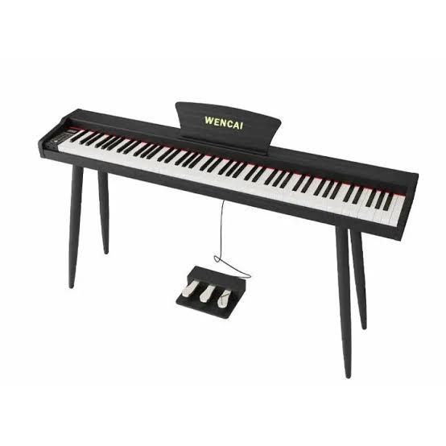

Учебный каталог товаров на Bootstrap
Проект демонстрирует использование Bootstrap-сетки, адаптивных колонок и базовых utility-классов.
Перейти в каталогПреимущества проекта
Bootstrap-сетка
Страница построена на 12-колоночной системе Bootstrap.
Адаптивность
Колонки меняют ширину в зависимости от размера экрана.
Готовая база
Проект подготовлен к добавлению карточек, форм и модальных окон.
Популярные товары
Все товары Хит
Хит
BN-40-RD Баян ученический двухголосный
Хотите прикоснуться к настоящей музыкальной истории? Баян «Мелодия» от Тульской фабрики — это не просто инструмент, а живая легенда, которую знают и любят поколения музыкантов. В народе его ласково зовут «тёрочкой» — и в этом имени столько тепла и уважения!
131140 руб.
Подробнее
ХитЦифровое пианино WENCAI BL-8802
WENCAI BL-8802 — цифровое пианино с 88 полноразмерными взвешенными клавишами. Полностью взвешенная клавиатура подходит для обучения, регулярных домашних занятий и развития техники игры.
28990 руб.
Подробнее Скидка
Скидка
Комплект скрипичный Stefan Poladic 200 3/4
Этот скрипичный комплект начального ценового сегмента, построенный полностью из массива, без использования ламината. В отличие от 100 модели, в модели 200 используется древесина более высокого класса, что обогащает звуковую палитру.
11700 руб.
Подробнее